First Code
# R as a calculator
4+4+5
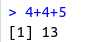
#White spacing is ignored Space does not matter
4+4+ 5
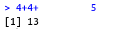
~~~~~~~~~~~~~~~~~~~~~~~~~~~~~~~~~
# Operators: + - / * ^
# Using several operators and round brackets
(5-3)^4
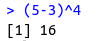
~~~~~~~~~~~~~~~~~~~~~~~~~~~~~~~~~
# Creating objects
What is an object?
• A data object is a collection of data you want to be used as one.
• whole dataset
• result of a calculation
• a part of a dataset with specific traits.
• different object properties/ classes determine what you can or cannot do with the data.
• classic object class: ‘data.frame’
• Columns for variables
• rows for observation
• The simplest object class: vector -> a collection of values of the class
• vector+ date = time series data/ ‘ts’
• numeric vector -contains numeric data
(x<- c(4,5,6)
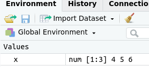
c(4,5.2,76) -> y # arrows work both directions
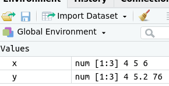
y
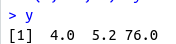
x = c(4, 5, 6)
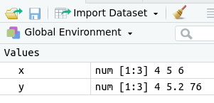
assign("x",c(4.2, 1, 5)) # function assign
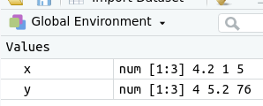
~~~~~~~~~~~~~~~~~~~~~~~~~~~~~~~~~
# c for concatenate
What is concatenation?
The values within the brackets c() belong together
x =c(4,5,6)
x # display in console
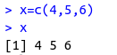 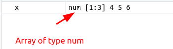
x=c(4,5,6); x # semicolon indicates a new row of code
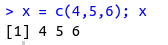
~~~~~~~~~~~~~~~~~~~~~~~~~~~~~~~~~
# See which objects are already created
ls()
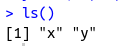
objects()
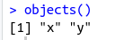
~~~~~~~~~~~~~~~~~~~~~~~~~~~~~~~~~
# Removing an object
rm("x")
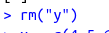
~~~~~~~~~~~~~~~~~~~~~~~~~~~~~~~~~
# Working with vectors
x = c(y, 5, y)
x
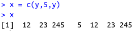 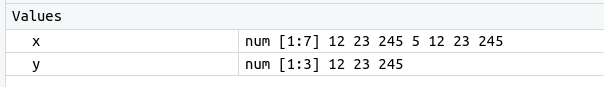
~~~~~~~~~~~~~~~~~~~~~~~~~~~~~~~~~
# Sum and roots
sum(x)
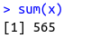
sqrt(x)
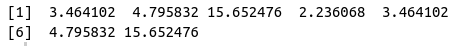
~~~~~~~~~~~~~~~~~~~~~~~~~~~~~~~~~
# Values at a given position within the vector
x[1]
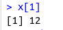 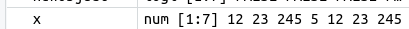
ewobject <- x<5 ; newobject
x # Comparison against original values
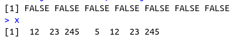
~~~~~~~~~~~~~~~~~~~~~~~~~~~~~~~~~
## Types of brackets
# () round brackets as the standard
• The standard, mainly used form
• bind values together within a func or an object
• predefined functions use this type of brackets.
# [] box brackets for index positions
• Used for data filtering
• Indicate the index position within an object.
▪ in vector: single value
▪ in data frame: row or column
# {} curled brackets for functions and loops
• Used within self-designed functions.